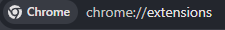

Como instalar manualmente
1. Extraia o arquivo
Após baixar o .zip, extraia o conteúdo para uma pasta permanente no seu computador.
2. Abra as extensões do Chrome
No seu navegador, digite chrome://extensions/ na barra de endereços ou acesse pelo menu.

3. Ative o Modo do Desenvolvedor
No canto superior direito, ative a chave "Modo do desenvolvedor".

4. Carregue a pasta
Clique em "Carregar sem compactação" e selecione a pasta onde você extraiu os arquivos.